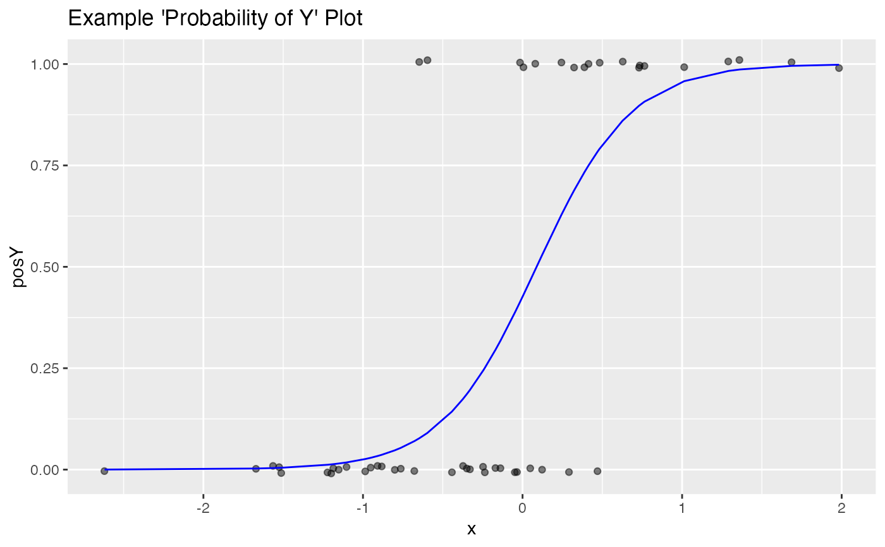

R/BinaryYScatterPlot.R
BinaryYScatterPlot.RdPlot the scatter plot of a binary variable with a smoothing curve.
BinaryYScatterPlot( frame, xvar, yvar, title, ..., se = FALSE, use_glm = TRUE, point_color = "black", smooth_color = "blue" )
| frame | data frame to get values from |
|---|---|
| xvar | name of the independent column in frame |
| yvar | name of the dependent (output or result to be modeled) column in frame |
| title | title to place on plot |
| ... | no unnamed argument, added to force named binding of later arguments. |
| se | if TRUE, add error bars (defaults to FALSE). Ignored if useGLM is TRUE |
| use_glm | if TRUE, "smooths" with a one-variable logistic regression (defaults to TRUE) |
| point_color | color for points |
| smooth_color | color for smoothing line |
The points are jittered for legibility. By default, a logistic regression fit is
used, so that the smoothing curve represents the probability of y == 1 (as fit by
the logistic regression). If
use_glm is set to FALSE, a standard smoothing curve (either loess or a
spline fit) is used.
set.seed(34903490) x = rnorm(50) y = 0.5*x^2 + 2*x + rnorm(length(x)) frm = data.frame(x=x,y=y,yC=y>=as.numeric(quantile(y,probs=0.8))) frm$absY <- abs(frm$y) frm$posY = frm$y > 0 frm$costX = 1 WVPlots::BinaryYScatterPlot(frm, "x", "posY", title="Example 'Probability of Y' Plot")